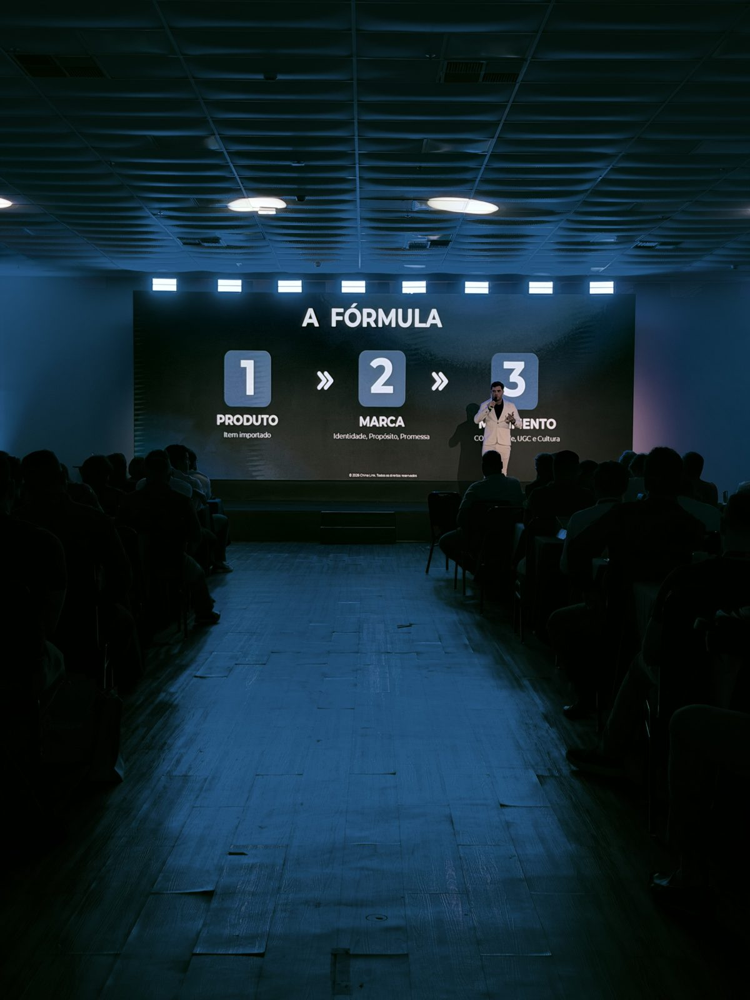
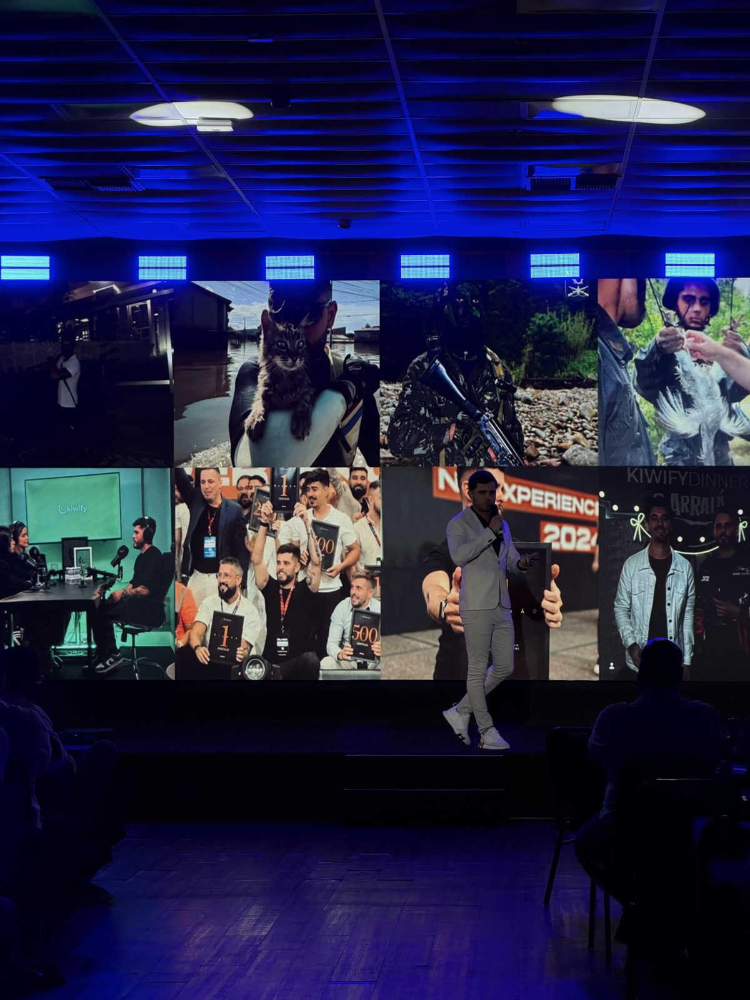
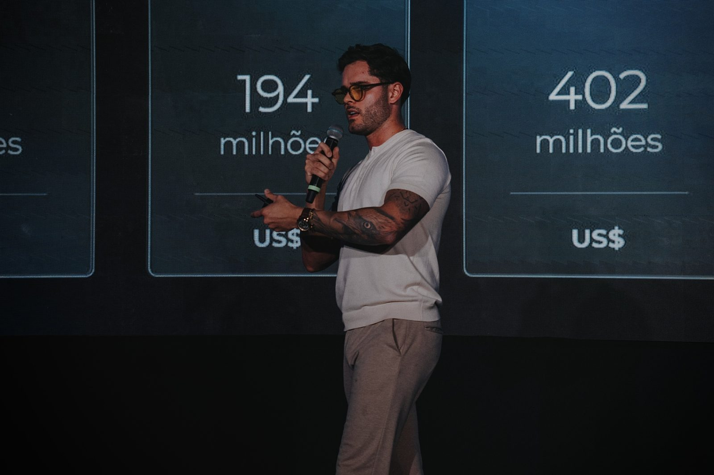
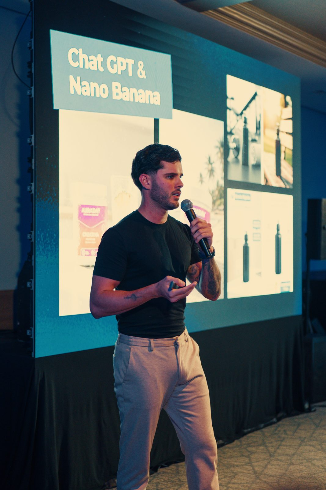
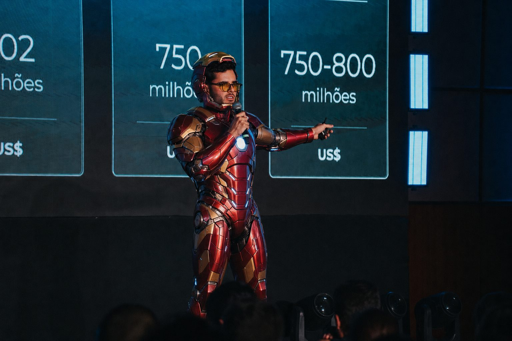
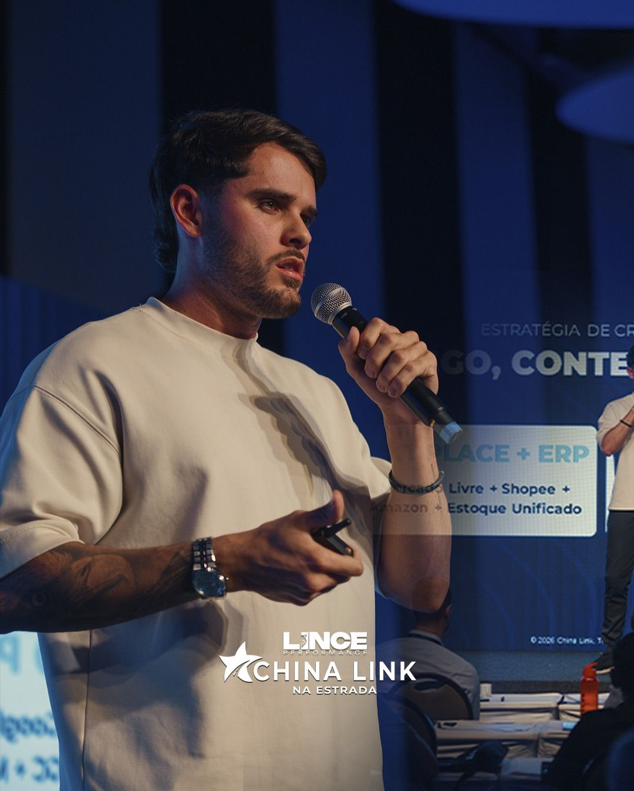
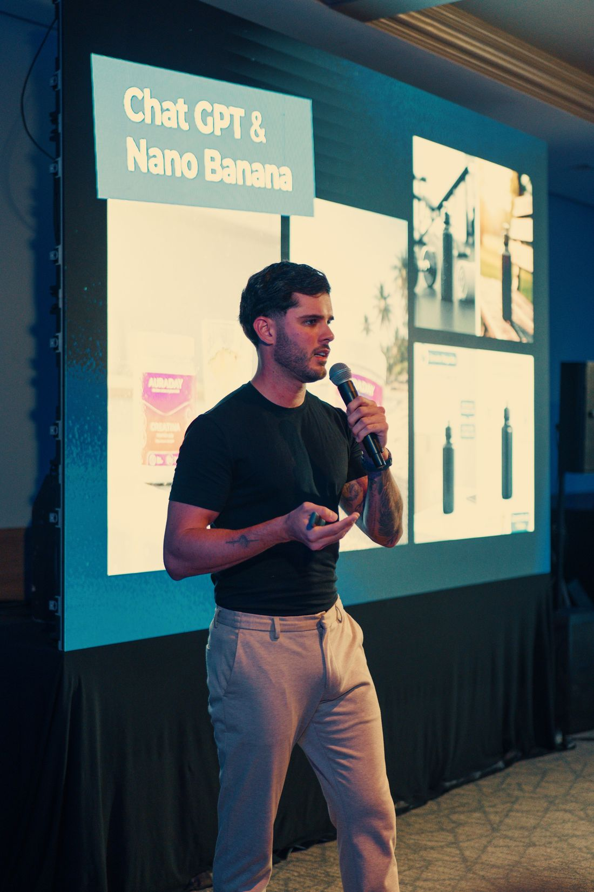
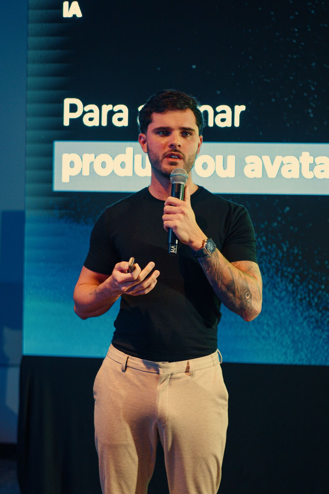
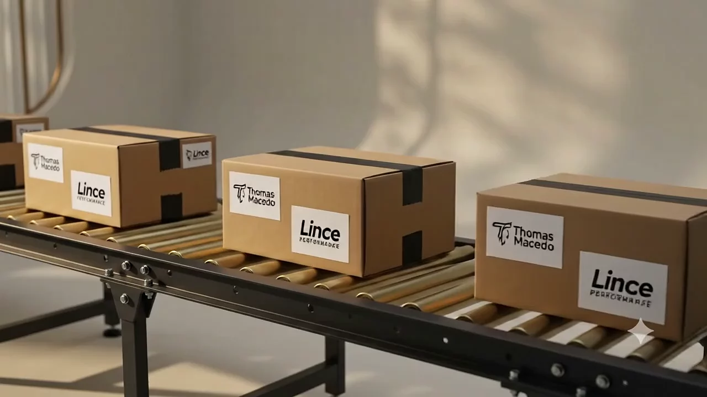

TikTok Shop · Tráfego Pago · Marca Própria · Negócios Locais · IA
Escala de verdade: TikTok Shop, tráfego e marca própria.
Faço marcas, assessorias de marketing e negócios locais venderem mais, com TikTok Shop, tráfego pago de ROI escalável e marca própria. E coloco IA pra operação aguentar o volume. Contrato de parceria com o TikTok e treinamento na sede do TikTok.
Contrato de parceria com o TikTok: o que isso muda pra você
Tenho contrato de parceria com o TikTok for Business e fui treinado na sede do TikTok pelo diretor global do programa de parceiros. Quem começa comigo leva junto os benefícios oficiais:
Cupom · novo anuncianteGaste até US$ 6.000 em Adse ganhe o mesmo valor em créditos
O crédito sai no mês seguinte, desde que o valor seja gasto em campanhas no 1º mês.
TikTok Shop · vendedor60 dias sem comissãoao abrir a loja e concluir as missões
Conforme as condições do TikTok Shop para novos vendedores.
Método direto da fonte: loja, criativos e campanhas do jeito ensinado dentro do TikTok.
Gasto certo no 1º mês: eu planejo pra você não perder o crédito.
Operação completa: loja, lives, creators e TikTok Ads medidos por resultado.
Tráfego sem marca é aluguel. Marca sem tráfego é segredo.
Eu escalo vendas juntando o que quase ninguém junta: TikTok Shop e tráfego pago pra gerar demanda, marca própria pra ter margem, uma assessoria que cresce sem inchar e IA pra operação aguentar o volume. Regra da casa: só recomendo o que roda na minha própria operação.
Rei LogFiscal: NF-e e etiqueta de envio no automático
Dr. Contrato: contratos prontos em minutos
Conteúdo & Publicação
Nolan: roteiros de vídeo que prendem
LaVision: olhar de filmmaker em cada peça
Machado: um artigo por dia no site, sozinho
Gutenberg: LinkedIn publicado todo dia
Sir Mídia Automática: Instagram no horário certo
Máquina de Conteúdo: a central que rege as publicações
Designer: criativos de campanha em série
FORGE: landing pages do briefing ao ar
Propostas & Fechamento
Arquiteto: propostas premium em PDF
Arc: apresentações com assinatura de estúdio
Diretor Camaleão: troca de pele por marca e fecha
Marketplaces
Garimpo: os mais vendidos, garimpados por você
Guardião Mercado Livre: loja pronta e vendendo
Guardião Amazon: catálogo e operação
Guardião Shopee: presença e ofertas
Guardião TikTok Shop: a vitrine da nova geração
Guardião Supremo: o general dos anúncios pagos
Núcleo, Segurança & Rede
Eve: o núcleo que orquestra todos
Sentinela: segurança que se corrige sozinha
Watch Dog: saúde do sistema, 24 horas
Buraco de Minhoca: a rede que liga as máquinas
Gary Keller: foco na única coisa que importa hoje
Fridayonline
Hoje
Oi! Acabei de ver a palestra do Thomas no China Link 🙌 quero entender como levar minha loja pro digital
20:41
Oi, Camila! Que bom ter você aqui 😊 Sou a Friday, do time do Thomas. Me conta: o que sua empresa vende e há quanto tempo está no mercado?
20:41
Moda feminina, 8 anos de loja física. Instagram parado e quase nada de venda online
20:42
Entendi. Com loja física forte, o caminho mais rápido costuma ser Instagram + tráfego local e depois TikTok Shop. Já montei um planejamento inicial pra você 👇
20:42
Planejamento personalizado · CamilaDiagnóstico, prioridades e primeiros 30 diaslince-plano.vercel.app20:43
Quer conversar com o time pra colocar isso pra rodar? Tenho quinta às 10h ou sexta às 14h.
20:43
Sexta 14h 🙏
20:44
Fechado ✓ Consultoria marcada pra sexta, 14h. Mandei o convite no seu e-mail e te lembro aqui antes 😉
20:44
Mensagem
Reconstituição de um atendimento real. Nome e detalhes alterados.
Case real · palestras China Link na Estrada
A palestra acaba. A Friday começa.
Depois de cada palestra, centenas de empresários chamam no WhatsApp ao mesmo tempo. Nenhum time humano responde todo mundo na hora. A Friday responde, entende o negócio, manda um planejamento personalizado e marca a consultoria sozinha.
341empresários chamaram a Friday depois das palestras
A LINCE Performance é a agência de marketing e vendas online que eu dirijo em Santos. É onde estratégia, tráfego pago, criativos gravados presencialmente, TikTok Shop, e-commerce e marcas viram operação, com gente e agentes de IA trabalhando juntos.
Boa parte das marcas desta página passou pelo time da LINCE.
Mais de 40 agentes com casa, ofício e hora de dormir num mundo 3D ligado aos dados reais da empresa: o clima de Santos, as vendas do dia, a inadimplência que vira um monstro que só morre quando o problema é resolvido na vida real.
Como um jovem de 28 anos que não sabe programar montou 50 funcionários de IA que atendem, vendem e cuidam do dinheiro enquanto ele dorme, numa Matrix em forma de fazenda onde os agentes conversam, interagem e vivem suas próprias vidas, tudo conectado ao mundo real.
Este livro é um interrogatório à própria inteligência artificial, contado como uma história de fazenda que qualquer pessoa entende: a porteira que parece gente, o detetive que escuta conversas, o velho pato que guarda o cofre, o cão que nunca dorme. Tudo simples de ler. Tudo real, funcionando hoje, no celular, no carro e até num óculos.
"A pergunta não é se a inteligência artificial vai trabalhar pra você. É quanto tempo você ainda vai trabalhar sem ela."
No palco, criativos com IA para marcasA Fórmula: Marca & MovimentoPlateia de empresários, ao vivoEscala & vendas, palco nacionalNo palco, marcas e comunidade

A Fórmula: produto, marca e lançamento

No palco, ecossistema Kiwify

O mercado de IA em números, palco nacional

ChatGPT & Nano Banana aplicados a produtoPlateia, evento nacionalNo palco: China Link Na EstradaLINCE Performance × China Link

IA na prática, palestra para empresáriosCriativos com IA, animar produto ou avatarAbertura cultural: China Link Na EstradaAgentes de IA, ao vivoQ&A: painel de escalaPodcast: IMPOcast Na Estrada

China Link Na Estrada: Marketplaces & Escala

Palestra: IA aplicada a produtosCase ao vivo: ROI de 10,48 · Meta Business PartnersQ&A: China Link Na EstradaPalestra: Marcas & Comunidades

IA: Criativos de produtoPodcast: IMPOcast Na EstradaMarketing & PerformanceBastidores: NetworkingEvento de Inteligência Artificial
No palco, criativos com IA para marcasA Fórmula: Marca & MovimentoPlateia de empresários, ao vivoEscala & vendas, palco nacionalNo palco, marcas e comunidadeA Fórmula: produto, marca e lançamentoNo palco, ecossistema KiwifyO mercado de IA em números, palco nacionalChatGPT & Nano Banana aplicados a produtoPlateia, evento nacionalNo palco: China Link Na EstradaLINCE Performance × China LinkIA na prática, palestra para empresáriosCriativos com IA, animar produto ou avatarAbertura cultural: China Link Na EstradaAgentes de IA, ao vivoQ&A: painel de escalaPodcast: IMPOcast Na EstradaChina Link Na Estrada: Marketplaces & EscalaPalestra: IA aplicada a produtosCase ao vivo: ROI de 10,48 · Meta Business PartnersQ&A: China Link Na EstradaPalestra: Marcas & ComunidadesIA: Criativos de produtoPodcast: IMPOcast Na EstradaMarketing & PerformanceBastidores: NetworkingEvento de Inteligência Artificial
A estrada
Palestrante pelo Brasil nas edições do China Link na Estrada e do Negócios com a China, o nome original do evento:
BrasíliaGoiâniaSalvadorPorto AlegreCuritibaRecifeBelo HorizonteManausNatalRio de JaneiroUberlândiaCampo GrandeCuiabá+ outras edições pelo país
Sim. Tenho contrato de parceria com o TikTok for Business e fui treinado na sede do TikTok pelo diretor global do programa de parceiros. Monto e escalo lojas no TikTok Shop e campanhas no TikTok Ads, e novos anunciantes que começam comigo têm acesso ao cupom oficial que dá crédito de Ads igual ao valor gasto no primeiro mês, até US$ 6.000. Entenda a parceria.
O que é um agente de IA aplicado a vendas?
É um sistema de inteligência artificial que executa o trabalho comercial sozinho: responde o lead em segundos, qualifica, tira dúvidas e marca a reunião no WhatsApp, 24 horas por dia. Diferente de um chatbot de menu, ele conversa naturalmente e toma decisões dentro do processo de vendas.
Uma agência consegue escalar sem inchar a equipe?
Consegue, se a operação for desenhada para agentes. Atendimento, follow-up, monitoramento e relatórios rodam com IA; as pessoas ficam com estratégia e criação. É assim que a minha própria agência opera, e é o mesmo motor que implanto nos clientes.
IA vai substituir a minha equipe?
Não. IA bem implantada tira da equipe o trabalho repetitivo (responder, cobrar e planilhar sempre a mesma coisa) e devolve tempo para o que gera receita. Quem usa IA só para cortar custo está usando 10% do potencial.
Quanto custa implantar agentes de IA?
Depende do escopo: um agente de atendimento no WhatsApp é um projeto; uma operação inteira rodando com agentes é outro. Por isso o primeiro passo é um diagnóstico da operação. Dele sai o desenho e o investimento. Escrevi um guia de custos aqui.
Vocês cuidam só da IA ou também do marketing?
Da operação completa: TikTok Shop, estratégia, criativos de alta estética gravados pessoalmente, tráfego no Meta, Google e TikTok Ads, marca própria, negócios locais e os agentes de IA que atendem e recuperam vendas. Seis frentes, um motor.
Onde vocês atendem?
Base em Santos (SP), operação no Brasil inteiro e exterior. Gravação de criativos presencial na Baixada Santista e região; estratégia, tráfego e IA são remotos por natureza.
Capítulo 03: A máquina entregando

Vamos conversar
Pronto pra vender mais e escalar?
Me chama no WhatsApp. Eu mesmo respondo. Ou a Friday, e você não vai notar a diferença.